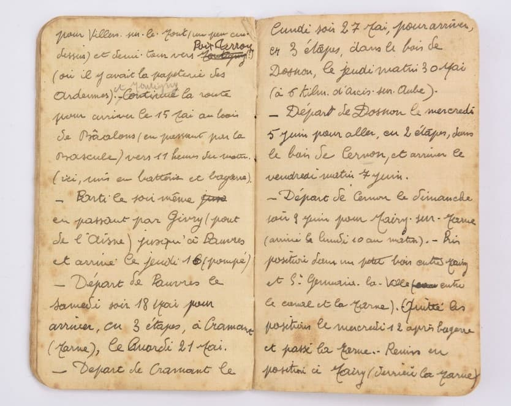
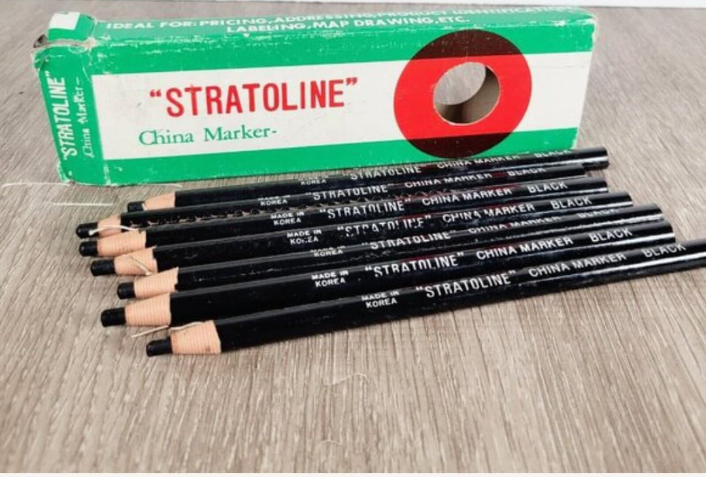
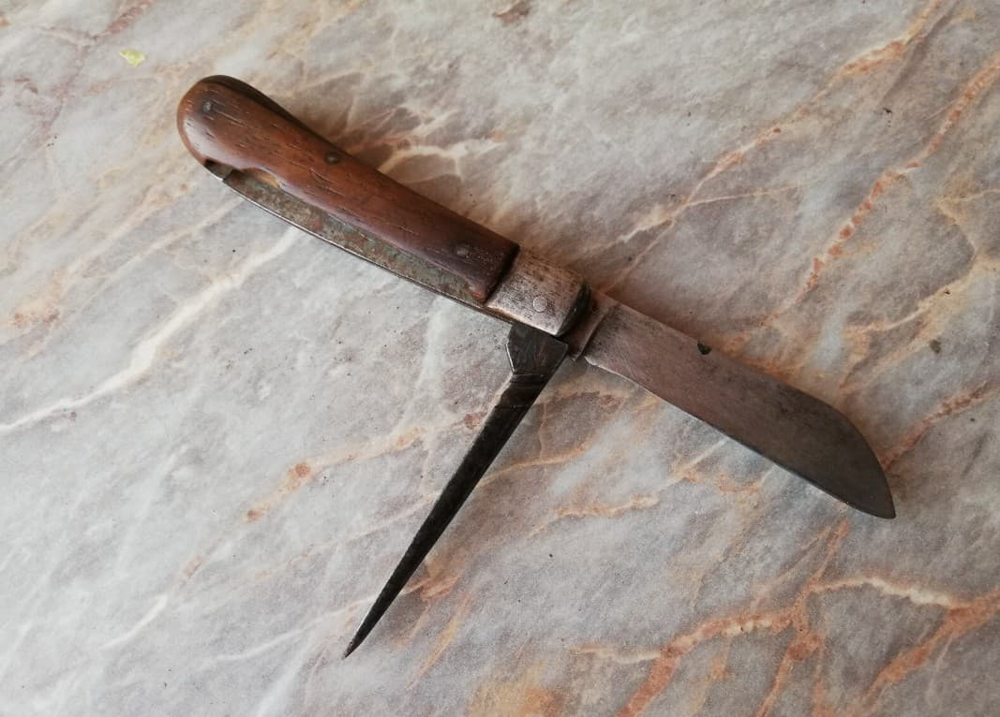
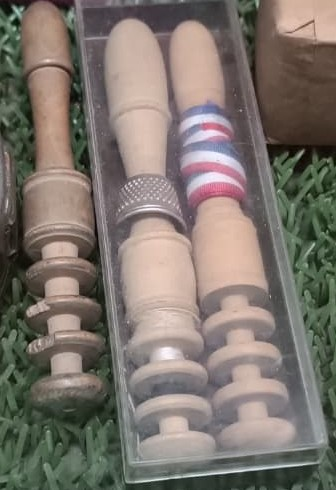
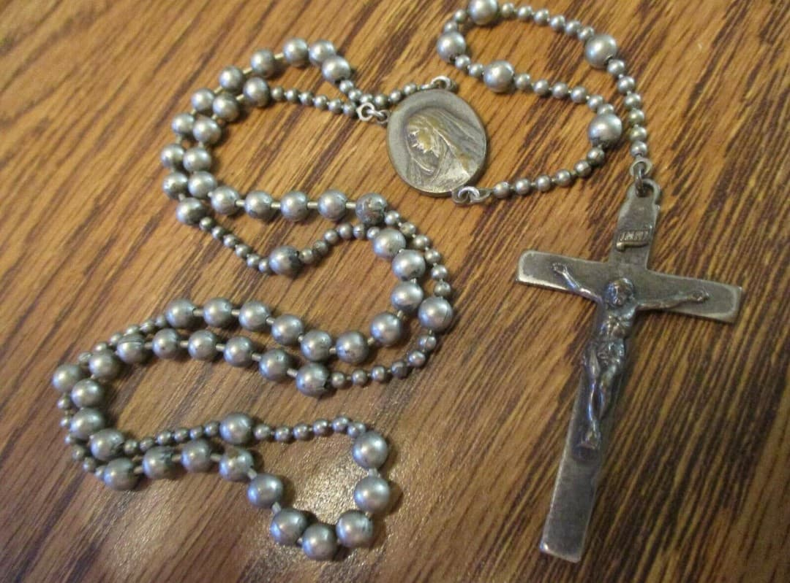
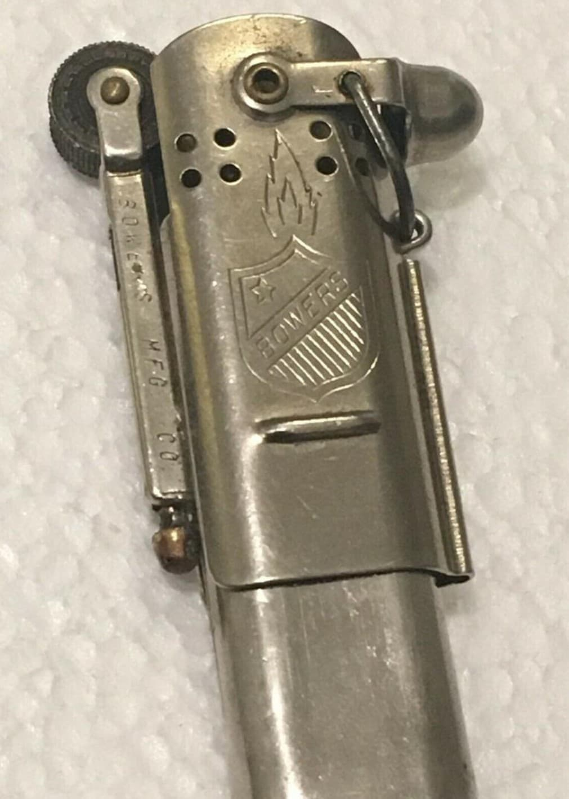

Introduction
Le soldat français garde toujours sur lui quelques objets essentiels : papiers militaires, carnet, crayon gras, couteau pliant, nécessaire de couture, objets religieux et de quoi allumer un feu. Ces éléments sont rangés dans les poches de la vareuse ou du pantalon, jamais laissés au cantonnement.
Papiers militaires
Le soldat garde toujours son livret militaire, ses papiers d’identité et ses autorisations.
Carnet de notes
Le carnet sert à noter les positions, les ordres et les informations de terrain.

Crayon gras
Indispensable pour écrire sur les cartes, carnets ou documents, même sous la pluie.

Petit couteau pliant
Objet civil utilisé pour couper du pain, ouvrir des conserves ou bricoler.

Nécessaire de couture
Petit kit contenant aiguilles, fil et boutons de rechange. Le soldat l’utilise pour réparer rapidement sa vareuse, son pantalon ou ses équipements en campagne.

Objet religieux
Chapelet ou médaille, très répandu chez les soldats français comme objet de réconfort.

Briquet ou allumettes
Indispensable pour allumer cigarette, pipe, bougie ou feu de bivouac.

Tabac / Pipe
Objet de confort très courant pour se détendre et calmer le stress.